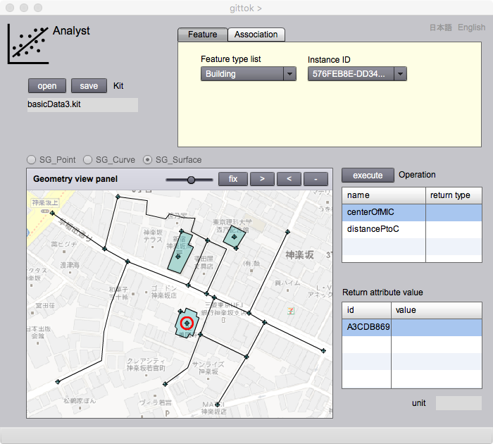
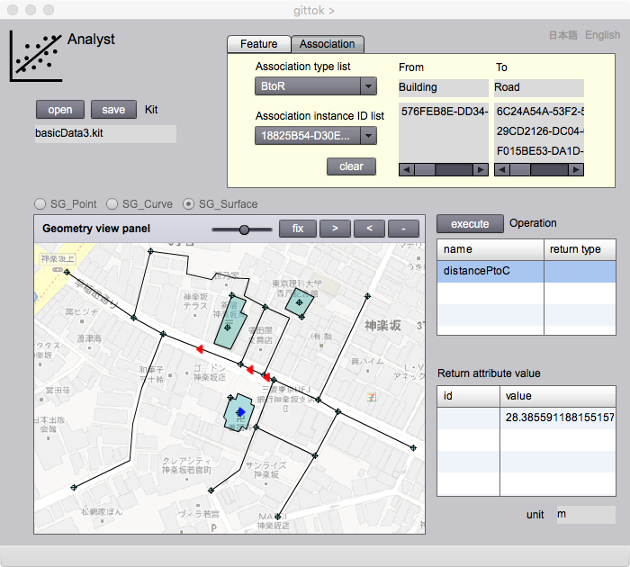

Analyst
空間解析
このページは，応用スキーマで示した地物や関連の「操作」を実行するためにあります．操作は，入力されるデータ（引数 (argument) といいます）を受け取り，処理を行い，結果となるデータ（戻り値 (return value) といいます）を返します．gittokでは，返された値は地物の属性（派生属性という）になります．ですから，応用スキーマで操作を定義するときには，戻り値を置く派生属性も定義しておかなければいけません．ところで，ここでは，操作という言葉を使用しますが，一般的には，処理，解析，分析という言葉が使われます．特に地理情報科学では，幾何属性が引数又は戻り値になる操作のことを空間解析 (spatial analysis) といいます．ですから，空間解析を行って，その地物がもつ性質を明らかにするためのページという意味で，このページには Analyst という名前をつけました．
さて，ここでは，操作の実行手順を説明します．次に，操作画面の表示欄やボタンについて説明します．さらに，操作はどのように行われるのか，その仕組みを紹介します．最後に，その仕組みを使って操作のためのプログラムを作成し，gittokに組み込む方法を解説します．興味のある人は，是非，プログラムを作成して，自分なりの空間解析を実行してみて下さい．
操作の実行手順
1. 操作を行う kit をオープンします．すると，Instance view panel にベースマップ及び幾何属性が表示されます．
2. 操作を行うのが地物であれば Feature ，関連であれば Association タブ(ページ中央上)を選択します．

図１．地物操作用の画面
地物の場合
1. Feature type listから，該当する地物型を選択します．すると，Instance view panel の上にあるラジオボタンに，操作を行う地物の proxyになっている幾何データ型が示されます．
2. Instance view panel 上で地物インスタンスを指定します．すると，FeatureタブのInstance ID表示欄に，地物インスタンスの id が表示されます．また，Operation グリッドに，操作の名称と戻り値の型が表示されます．地物が複数の操作をもつ場合は，このグリッドに複数の操作一覧が表示されます．
3. Operation グリッドの中から，実行したい操作を選択し，execute ボタンを押すと，操作が実行されます．
4. 操作の結果が Return attribute value 欄に表示されます．結果が複合データ型の場合は，id 欄に戻り値の id が表示されます．結果が単純データ型の場合は，value 欄に表示されます．

図２．関連操作用の画面
関連の場合
1. Association type list から，該当する関連型を選択します．すると，From および To の表示欄に，関連する地物型の名前が表示され，この関連がもつ操作の一覧が，Operation グリッドに表示されます．
2. Association instance ID list で，操作を行う関連インスタンスを指定します．
3. From および To 表示欄に，それぞれの地物インスタンスの id が示されます．To 地物は複数ある場合もあるので，そのときはリストになります．
4. この指定が正しいか確認したいときは，show ボタンを押します．すると， from 地物，to 地物の中心に，右向きの青い三角形，左向きの赤い三角形が表示されます．これを見て判断します．
5. 操作を行う関連インスタンスであることが確かめられたら，Operation 表示欄で操作を指定し，execute ボタンを押します．
6. 操作が実行され，結果が Return attribute value 欄に表示されます．結果が複合データ型の場合は，id 欄に戻り値の id が表示されます．結果が単純データ型の場合は，value 欄に表示されます．
結果の表示
結果が幾何データ型をとる場合は，Instance view panelに結果が 反映されていることが分かります．
Analyst
Feature
Fields
Kit
呼び出されている kit の名前が表示されます．
Operation（選択可能）
このグリッドには，操作の名前と，戻り値の型名の一覧が表示されます．
Return attribute value
操作の実行結果が表示されます．結果が複合データ型のときは，その id，単純データ型のときは，その値が表示されます．
Instance view panel
ベースマップの上に地物インスタンスや関連インスタンスを代表する幾何データや記号が表示されます．
Feature type list（操作可能）
kitに登録されている地物の型名の一覧が表示されるので，操作を行う地物の型をここで指定します．
Instance ID
Instance view panel上で指定したインスタンスのIDがここに表示されます．
Buttons
open (Kit)
一度作成した kit を呼び出すときは，このボタンを押して，kit の選択を行います．kit がオープンされると下の表示欄に，kit のファイル名が表示されます．
save (Kit)
作成した kit を補助記憶装置に格納するためには，このボタンを押して，格納するフォルダーとファイル名を指定して，格納します．
execute
このボタンを押すと，操作が実行されます．
>
このボタンを押すと表示縮尺が小さくなります．
<
このボタンを押すと，表示縮尺が大きくなります．
-
このボタンを押すと，表示される画面縮尺が，初期化されます．
スライダー
ベースマップの透明度を調整することができます．ベースマップの表示を目立たせないようにするときに，使用します．
日本語
今あなたが読んでいるドキュメントが表示されます．
English
You can read the tutorial written in English.
Association
Fields
Kit
呼び出されている kit の名前が表示されます．
Operation（操作可能）
このグリッドには，操作の名前と，戻り値の型名の一覧が表示されます．
Return attribute value
操作の実行結果が表示されます．結果が複合データ型のときは，その id，単純データ型のときは，その値が表示されます．
Instance view panel
関連インスタンスを代表する記号(左右向きの三角形)が表示されます．
Association type list（操作可能）
kitに登録されている関連の型名の一覧が表示されるので，操作を行う関連の型をここで指定します．
Association instance ID list
このリストの中から，操作を行うインスタンスを指定します．この関連が，具体的にどれなのかを確認するときは，右隣にあるshow ボタンを押します．これを押すと，Instance view panel 上で，from地物には右向き三角形，to地物には左向き三角形が表示され，ボタンの表示がlclearになります．上の画面はそのときの状態を示しています．
Buttons
open (Kit)
一度作成した kit を呼び出すときは，このボタンを押して，kit の選択を行います．kit がオープンされると下の表示欄に，kit のファイル名が表示されます．
save (Kit)
作成した kit を補助記憶装置に格納するためには，このボタンを押して，格納するフォルダーとファイル名を指定して，格納します．
show/clear
showボタンを押すとInstance view panel上で，from地物には青い右向き三角形，to地物には赤い左向き三角形が表示され，ボタンの表示がlclearになります．clearボタンを押すと，三角形は消え，ボタンの表示がshowに戻ります．
execute
このボタンを押すと，操作が実行されます．
fix / pan
このボタンを押すと，ボタンの表示が pan になり，画面のスクロール （平行移動）が可能になります．pan の間は，スクロールはできますが，位置の指定はできません
>
このボタンを押すと表示縮尺が小さくなります．
<
このボタンを押すと，表示縮尺が大きくなります．
-
このボタンを押すと，表示される画面縮尺が，初期化されます．
スライダー
ベースマップの透明度を調整することができます．ベースマップの表示を目立たせないようにするときに，使用します．
日本語
今あなたが読んでいるドキュメントが表示されます．
English
You can read the tutorial written in English.
新たな操作の組み込み
もしあなたが Flush Builder を使用することができれば，gittok のソースコードを見て，自分で操作を開発して，gittok に組み込むことができます．その具体的な方法は，ここをご覧ください．